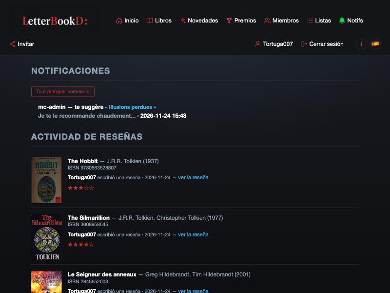

Notificaciones
Para qué sirve: Reunir todo lo que te concierne personalmente: sugerencias recibidas de otros miembros, reacciones a tus reseñas y comentarios bajo tus reseñas. Y más abajo, el flujo de todas las reseñas recientes de tu club.

Recorrido
La página tiene dos secciones. «Notificaciones» arriba: una línea por evento, con el nombre de usuario del emisor, el tipo de acción («te sugiere», «ha reaccionado a», «ha comentado») y un enlace al libro o reseña correspondiente. El botón «Marcar todo como leído» borra el distintivo de la campana. Abajo, «Flujo de reseñas»: las reseñas recientes publicadas en tu club, cada una con portada, libro, autor del libro, autor de la reseña y nota en estrellas, más un enlace «ver la reseña».
Cadenas de acción
Cada fila describe un disparador en la interfaz, el modal o formulario que abre, y el efecto producido.
| Disparador | Modal / Campos | Efecto |
|---|---|---|
| Botón «Marcar todo como leído» | Formulario POST. | Marca todas tus notificaciones como leídas. La campana, arriba a la derecha, pasa de verde a gris. Las notificaciones siguen visibles en el historial, pero ya no cuentan como no leídas. |
| Enlace en una notificación (título del libro, «ver la reseña») | — | Abre el contexto: ficha del libro, con un ancla a la reseña comentada. |
| Enlace «ver la reseña» en el flujo | — | Abre la ficha del libro posicionada en la reseña en cuestión. |